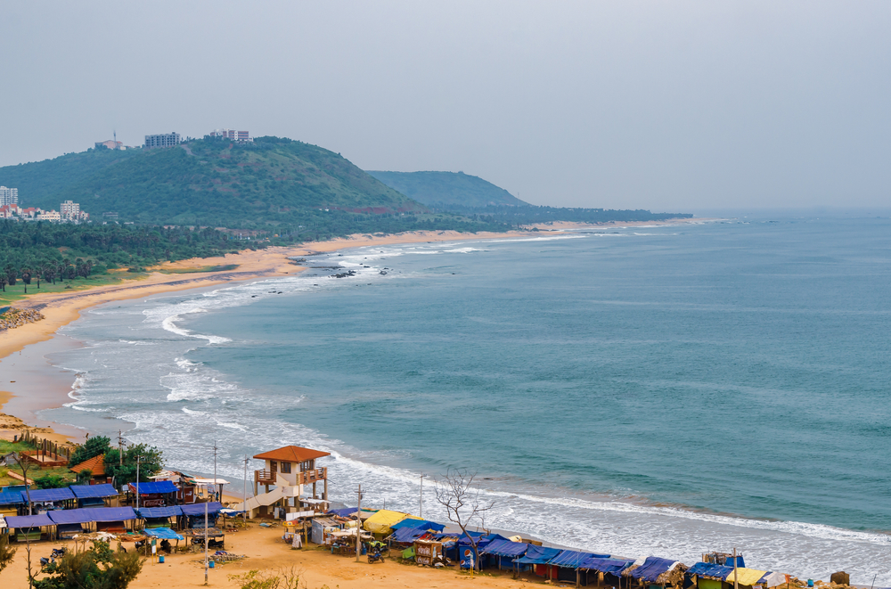

About Rushikonda Beach
Rushikonda Beach is one of the popular beaches in Visakhapatnam. It is located along the Bay of Bengal and is known for its beautiful sandy shore and blue ocean water.
Visitors come here to enjoy the ocean, walk along the beach, relax with friends and family, and take photographs of the beautiful coastline.
Photo Gallery

